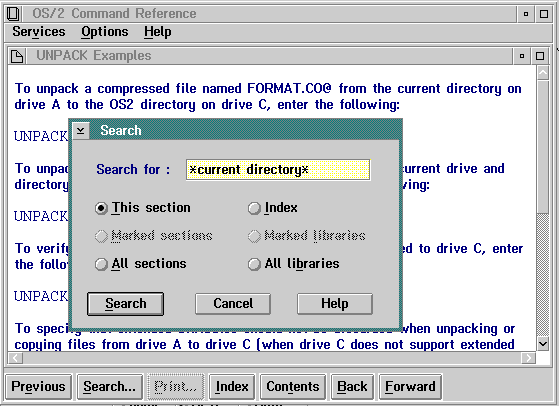

Search
This choice, and the Search push button, display the window shown in the
following figure. The user can type a text string consisting of letters,
numbers, blank spaces, and special characters, then select any of the choices
to search for the text string.

Search Window
Global file-name characters (wildcards) can be used with the text string;
for example:
*current directory*
The global file-name character, in this case an asterisk, automatically
finds all possibilities of the current directory string.
Following are descriptions of Search window choices:
This section
Searches the currently displayed help-text
window and highlights all occurrences of the search string that are found.
Marked sections
Searches
the online-document windows or help windows whose titles were marked in
the Contents window. IPF does not search unmarked secondary windows, or
windows attached to the marked window by hypertext links. Before selecting
Marked sections, the user must select Contents then mark the
help titles to be searched. If no help titles are marked, the Marked
sections choice is dimmed.
Sections are marked with the mouse by pressing and holding the Ctrl key
then clicking mouse button 1. Sections are marked with the keyboard by using
the cursor keys to highlight the item and then pressing the spacebar. The
same key sequences are used to unmark the selection.
If the search is successful, IPF displays a list of the window titles where
the text string was found. The search string is shown in the title bar
of the search results window.
All sections
Searches
the entire help library or online document and displays a list of the window
titles where occurrences of the search string were found. The search string
is shown in the title bar of the search results window. It does not search
title text.
Index
Searches
the index and displays a list of index entries in which the text string
was found.
If no search string is entered, this choice displays an alphabetic list
of all index topics in the help library or online document.
Marked
libraries
Searches selected help libraries or online
documents. The user must be in an active window of an online document or
help library and follow this procedure:
- Select Options then Libraries.
- Mark one or more libraries.
- Select Services, then Search, then
Marked libraries.
- Select the Search push button.
All
libraries
Searches all help libraries or online
documents and displays a list of the window titles where the text string
was found. The search string is shown in the title bar of the window.
[Back: Services Menu]
[Next: Print]